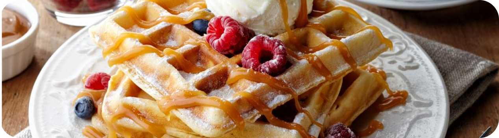

BELGIAN
Belgian Waffles

- 1/2 sdt bubuk perisa vanilla
- 25 gr tepung maizena
- 1/2 sdt baking powder
- 1 telur
- 1/2 sdt garam
- 6 sdm minyak sayur
- 1/4 sdt baking soda
- 240 cc susu putih
- 100 gr tepung protein
- 1 sdm gula pasir
- Ice cream
- Saus coklat
- Selai stroberi
- Maple syrup
- Brown sugar
- Cinnamon
- Pertama mempersiapkan peralatan yang akan dibutuhkan untuk membuat adonan waffle.
- Lalu untuk telur pisahkan antara kuning dan putihnya. Masukkan dalam wadah yang berbeda.
- Setelah itu ayak beberapa bahan kering dalam saringan seperti halnya tepung terigu, baking powder, baking soda dan tepung mazeina. Aduk-aduk dan tampung bahan-bahan ini dalam wadah.
- Siapkan sebuah wadah dan masukkan kuning telur bersamaan dengan susu dan minyak. Aduk sampai bahan ini tercampur secara merata.
- Setelah itu dalam wadah yang terpisah kocok putih telur sampai setengah mengembang. Masukkan vanila dan aduk-aduk secara merata sampai putih telur mengembang secara merata.
- Masukkan adonan cair yakni susu, minyak dan kuning telur kedalam campruan terigu. Aduk sampai bahan merata.
- Kemudian masukkan adonan putih telur dan aduk secara merata hingga menyatu.
- Siapkan cetakan waffle poles dengan menggunakan margarin dan panaskan diatas api yang kecil.
- Tuangkan adonan kedalamnya dan masak sampai matang dan crispy.
- Angkat sajian ini dan sajikan dalam piring untuk kemudian berikan dengan bahan pelengkap yakni ice cream, saus strawberry, saus coklat dan juga parutan keju.